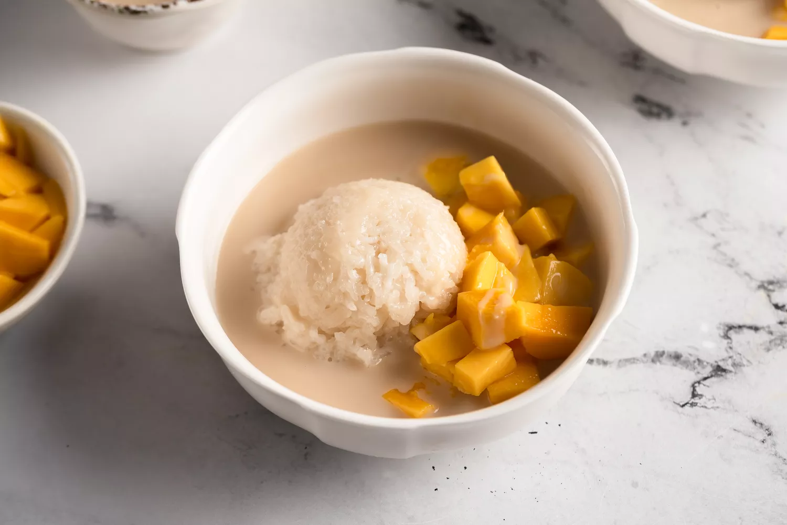

Thai Mango Sticky Rice Dessert
Copied from thespruceeats.com

Description
The classic Thai dessert known as khao niaow ma muang (mango sticky rice) is heavenly and scrumptious. Famously served as street food in Thailand and at Thai restaurants throughout the world, the taste of this tropical rice pudding is irresistible—and it's easy to make at home.
This mango sticky rice recipe requires just a few ingredients. Use the ripest mangoes you can find, good-quality coconut milk (avoid "lite" options), and Thai sweet rice. Also called glutinous rice or sticky rice, it can be found at Asian food stores and well-stocked supermarkets.
The sticky rice is made in a pot on your stove, so you don't need a rice cooker. Coconut milk and brown sugar add delicious flavor to both the rice and the sauce. When everything's ready, you'll scoop rice into a bowl, add some fresh mango slices, and smother it with the sweet coconut sauce to create a Thai dessert that will transport you to Southeast Asia.
Ingredients
- 1 cup Thai sweet rice (aka sticky rice)
- 1 1/2 cups water, divided
- 1 (13.5-ounce) can coconut milk, divided
- 1/4 teaspoon salt
- 4 to 5 tablespoons brown sugar, to taste, divided
- 1 to 2 ripe mangoes
Method
- Gather the ingredients.
- Soak the rice in 1 cup water in a medium pot for 20 to 30 minutes. Do not drain the rice.
- Add 1/2 cup more water, plus 1/2 can of the coconut milk, the salt, and 1 tablespoon of the brown sugar. Stir well. Bring to a gentle boil, then partially cover with a lid (leaving some room for steam to escape). Reduce heat to medium-low, or just until you get a gentle simmer.
- Simmer 20 to 30 minutes, or until the coconut water has been absorbed by the rice. Turn off the heat but leave the pot on the burner with the lid on tight. Allow it to sit for 5 to 10 minutes.
- To make the sauce, warm (do not boil) the remaining coconut milk over medium-low heat in a small saucepan (about 5 minutes). Add 3 tablespoons brown sugar, stirring to dissolve. Taste-test sauce for sweetness, adding more sugar if desired. (Note that it will not taste as sweet once added to the rice.)
- Prepare the mangoes by cutting them open and slicing each into bite-sized pieces.
- Scoop some warm rice into each serving bowl, then drizzle lots of the sweet coconut sauce over the top. It should look like an English pudding with custard sauce, with the rice swimming in sauce. Arrange mango slices on the rice and finish with a drizzle of more sauce.
Back to home